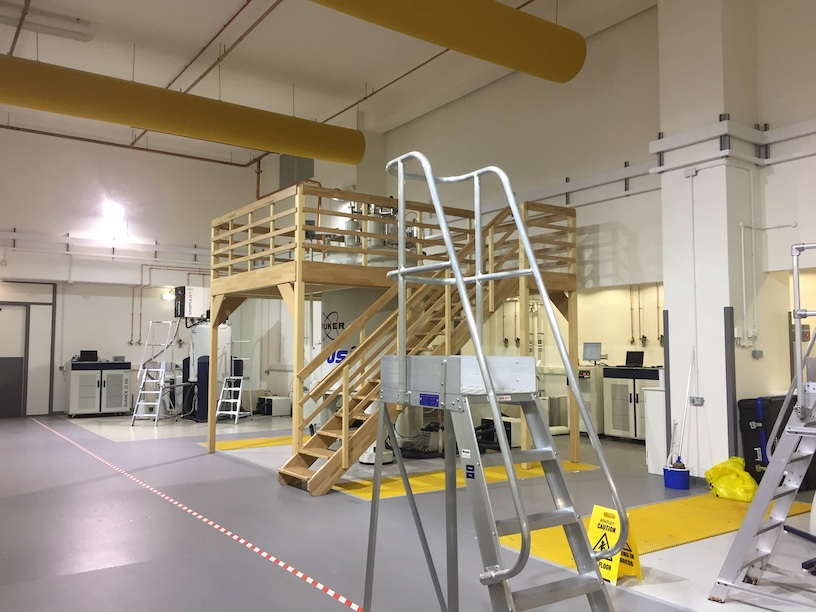

Facilities

NMR Spectroscopy at UCL
UCL is extremely well-equipped for solution-state biomolecular NMR, with an extensive range of spectrometers and probes available within the Darwin building, assisted by an experienced facility manager, Angelo Figueirido:
- 800 MHz TCI cryoprobe (1H, 15N, 13C, 2H)
- 700 MHz TCI cryoprobe (1H, 15N, 13C, 2H)
- 600 MHz TXO cryoprobe (13C, 15N, 1H, 2H, optimised for 13C detection)
- 500 MHz TCI Prodigy cryoprobe (1H/19F, 15N, 13C, 2H) with SampleJet

National Facilities
We are just 5 min away from the Francis Crick Institute, which hosts the national MRC Biomedical NMR Centre. This provides routine access to a range of field strengths from 600 to 950 MHz, including solid-state HR-MAS capabilities.
We are also regular users of the national 1 GHz spectrometer hosted at HWB-NMR in Birmingham.